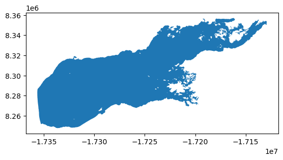

# Load packages
import xarray as xr
import geopandas as gpd
import pandas as pd
import rioxarray
from shapely.geometry import mappingSubset data in polar stereographic projection using a shape file fr
Updated September 2024
Background
Remote sensing data in polar regions commonly use a polar stereographic projection, where the georeferencing is in x and y coordinates instead of the more widely used latitudes and longitudes. Working with data from different projections can be challenging.
Objectives
In this tutorial, we will demonstrate how to download remote sensing data in polar stereographic projection from PolarWatch and subset it within the boundaries of Lake Iliamna in Alaska, where the lake shape data is presented in a different projection.
As this tutorial focuses on satellite data transformation, a basic understanding of satellite data, map projections, and the ERDDAP data server is recommended. For additional learning, you can explore satellite data tutorials and video lectures available through introductory video lectures and tutorials hosted on the CoastWatch Learning Portal and GitHub repository.
The tutorial demonstrates the following techniques
- Download sea ice satellite data from the PolarWatch ERDDAP data server
- Import geographical features of Lake Iliamna from a shapefile
- Transform data from one projection to another
- Subset the satellite data for Lake Iliamna
- Visualize data in different projection
Data Used
World Lake shape data
The world lake shapefile can be downloaded from ArcGIS Hub at https://hub.arcgis.com, and is also available in the resource/ directory of this tutorial folder. The file includes geographical features of all world lakes. For this exercise, only the features of Lake Illemna will be used.
IMS Snow and Ice Analysis, Arctic, 4km, 2004 - Present, Daily (PolarWatch Preview)
The IMS dataset includes daily snow and ice coverage data for the Arctic with a 4-km resolution, available starting from 2004. The values in the dataset are categorical, representing five categories: 0 for areas outside the coverage zone, 1 for open water, 2 for land without snow, 3 for sea ice or lake ice, and 4 for snow-covered land. Data with a 1-km resolution are also available. Please contact us for more information.
Load python packages
For this exercise, the following packages are required. The complete list of required packages for all CoastWatch tutorials is provided in the environment.yml located in the Python-setup/ folder.
Load Lake Illemna data
# Load lake shape file into geopanda data frame
shapefile_path = '../resources/Iliamna/Iliamna.shp'
lakes_shp = gpd.read_file(shapefile_path)# Check column names
print("Lake Data Columns:")
print(lakes_shp.columns)
lakes_shp["Lake_name"].unique()Lake Data Columns:
Index(['Hylak_id', 'Lake_name', 'Country', 'Continent', 'Poly_src',
'Lake_type', 'Grand_id', 'Lake_area', 'Shore_len', 'Shore_dev',
'Vol_total', 'Vol_res', 'Vol_src', 'Depth_avg', 'Dis_avg', 'Res_time',
'Elevation', 'Slope_100', 'Wshd_area', 'Pour_long', 'Pour_lat',
'geometry'],
dtype='object')array([None, 'Iliamna'], dtype=object)# Look up Iliamna lake
print("Row(s) that contain lake name: Iliamna")
lakes_shp[lakes_shp['Lake_name'].str.contains('iliamna', case=False, na=False)]Row(s) that contain lake name: Iliamna| Hylak_id | Lake_name | Country | Continent | Poly_src | Lake_type | Grand_id | Lake_area | Shore_len | Shore_dev | ... | Vol_src | Depth_avg | Dis_avg | Res_time | Elevation | Slope_100 | Wshd_area | Pour_long | Pour_lat | geometry | |
|---|---|---|---|---|---|---|---|---|---|---|---|---|---|---|---|---|---|---|---|---|---|
| 287 | 31 | Iliamna | United States of America | North America | NHD | 1 | 0 | 2634.62 | 1006.79 | 5.53 | ... | 1 | 43.8 | 354.811 | 3761.5 | 13 | -1.0 | 16869.4 | -155.884538 | 59.331889 | POLYGON ((-17336380.000 8247763.000, -17336837... |
1 rows × 22 columns
# Extract Iliamna shape
iliamna_shp = lakes_shp[lakes_shp['Hylak_id'] == 31]
# Examine coordinate referernce system (crs)
iliamna_shp.crs<Projected CRS: EPSG:3857>
Name: WGS 84 / Pseudo-Mercator
Axis Info [cartesian]:
- X[east]: Easting (metre)
- Y[north]: Northing (metre)
Area of Use:
- name: World between 85.06°S and 85.06°N.
- bounds: (-180.0, -85.06, 180.0, 85.06)
Coordinate Operation:
- name: Popular Visualisation Pseudo-Mercator
- method: Popular Visualisation Pseudo Mercator
Datum: World Geodetic System 1984 ensemble
- Ellipsoid: WGS 84
- Prime Meridian: Greenwich# Visualize the lake
iliamna_shp.plot()
Load IMS data from PolarWatch ERDDAP
# Load IMS data from ERDDAP
erddap_url = "https://polarwatch.noaa.gov/erddap/griddap/usnic_ims_4km"
ds = xr.open_dataset(erddap_url)
# Select one day data
ds_date = '2024-07-30'
ds = ds.sel(time=ds_date)
# Visualize the IMS data
ds["IMS_Surface_Values"].plot()
# Check the IMS data projection
ds.attrs['grid_mapping_proj4']'+proj=stere +lat_0=90 +lat_ts=60 +lon_0=-80 +k=1 +x_0=0 +y_0=0 +a=6378137 +b=6356257 +units=m +no_defs'Transform the lake data crs to match the satellite data crs
The helper functions are provided for the projection transformation process
# from PolarWatch helper functions
def set_geo_specs(dat: xr.DataArray, xdim: str, ydim: str, crs: str) -> xr.DataArray:
"""Update the spatial dimensions and coordinate reference system (CRS) of an xarray DataArray.
Args:
dat (xr.DataArray): The data array to modify.
xdim (str): Name of the dimension representing the x-coordinate.
ydim (str): Name of the dimension representing the y-coordinate.
crs (str): String representation of the coordinate reference system to assign.
Returns:
xr.DataArray: The updated data array with specified spatial dimensions and CRS.
"""
dat = dat.rio.set_spatial_dims(x_dim=xdim, y_dim=ydim)
try:
dat = dat.rio.write_crs(crs)
print('CRS setup successful')
except Exception as e:
print(f'Error during crs setup: {e}')
return dat
def clip_data_to_shapefile(data_array: xr.DataArray, shapefile_geom, crs: str)-> xr.DataArray:
"""Clip data array to the specified shapefile geometry with CRS.
Args:
data_array (xr.DataArray): The data array to modify.
shapefile_geom : Shapefile geometry.
crs (str): CRS of the data.
Returns:
xr.DataArray: The updated data array with specified spatial dimensions and CRS.
"""
try:
clipped_data = data_array.rio.clip(shapefile_geom.apply(mapping), crs)
print("Clipping successful")
return clipped_data
except Exception as e:
print(f"Error during clipping: {e}")
raise
def transform_shapes(shp: gpd.GeoDataFrame, crs:str)-> gpd.GeoDataFrame:
"""
Transforms the projection of a GeoDataFrame to a specified coordinate reference system (CRS).
This function takes a GeoDataFrame and transforms its projection to the specified CRS, typically used
for reprojecting geometries to match satellite data or other spatial datasets that require a specific CRS.
For example, transforming the shape to a Polar Stereographic Projection.
Parameters:
shp : gpd.GeoDataFrame
The input GeoDataFrame containing geometries (e.g., shapes, boundaries) that need to be transformed.
crs : str
The target coordinate reference system (CRS) in string format (e.g., "EPSG:3413" for the Polar Stereographic Projection).
Returns:
gpd.GeoDataFrame
A GeoDataFrame with geometries transformed to the specified CRS.
"""
try:
shp_proj_transformed = shp.to_crs(crs)
print(f"Projection transformed to {crs}")
return shp_proj_transformed
except Exception as e:
print(f"Error transforming CRS: {e}")
raise# Set crs_project as the data crs (based on xarray.Dataset.attrs)
crs_project = "+proj=stere +lat_0=90 +lat_ts=60 +lon_0=-80 +k=1 +x_0=0 +y_0=0 +a=6378137 +b=6356257 +units=m +no_defs"
# Set data crs
ds = set_geo_specs(ds, xdim="x", ydim="y", crs=crs_project)
# Transform the shape into the data crs
iliamna_transformed = transform_shapes(iliamna_shp, crs_project)CRS setup successful
Projection transformed to +proj=stere +lat_0=90 +lat_ts=60 +lon_0=-80 +k=1 +x_0=0 +y_0=0 +a=6378137 +b=6356257 +units=m +no_defs# Examine lake shape crs
iliamna_transformed.crs<Projected CRS: +proj=stere +lat_0=90 +lat_ts=60 +lon_0=-80 +k=1 + ...>
Name: unknown
Axis Info [cartesian]:
- E[south]: Easting (metre)
- N[south]: Northing (metre)
Area of Use:
- undefined
Coordinate Operation:
- name: unknown
- method: Polar Stereographic (variant B)
Datum: unknown
- Ellipsoid: unknown
- Prime Meridian: Greenwich# Visualized transformed iliamna shape
iliamna_transformed.plot()
Subset the satellite data using the Lake shape
# Clip data to the shape
ds_clipped = clip_data_to_shapefile(ds, iliamna_transformed.geometry, iliamna_transformed.crs)Clipping successful# Visualized clipped data
ds_clipped["IMS_Surface_Values"].plot()
Resources
CoastWatch Learning Portal - Lectures, Videos, Other learning resources
CoastWatch Tutorials on Github - Tutorial notebooks and code samples
PolarWatch ERDDAP - Complete list of data available on PolarWatch ERDDAP Server
PolarWatch Catalog - Preview data on polar map